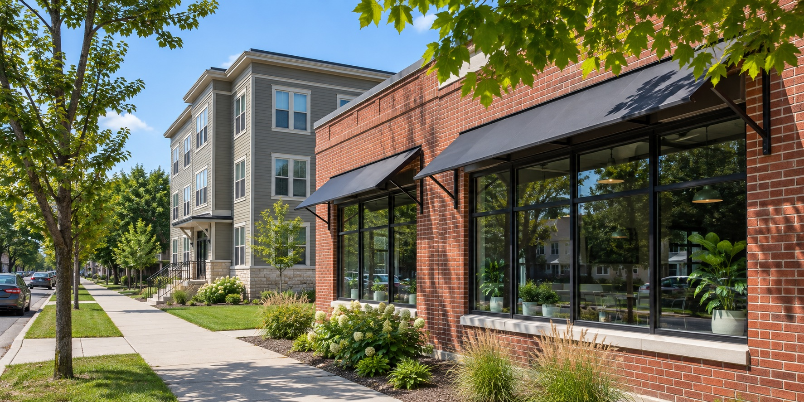

Leasing
Market vacancies, coordinate showings and manage the application and lease process.
Sheboygan & Manitowoc Counties
Oakridge manages long-term residential and commercial rentals, from finding tenants to coordinating repairs.

For Property Owners
FOR PROPERTY OWNERS
Market vacancies, coordinate showings and manage the application and lease process.
Keep rent collection, tenant communication and routine requests organized.
Handle repair requests, coordinate vendors and follow up on work at your property.
OUR SERVICE AREA
We focus on long-term rentals in these two Wisconsin counties. Tell us about your property and the support you’re looking for.
Information for property ownersFind information about rent payments, maintenance requests and available rentals.
Go to tenant resourcesTell us where it’s located and what you’d like help managing.